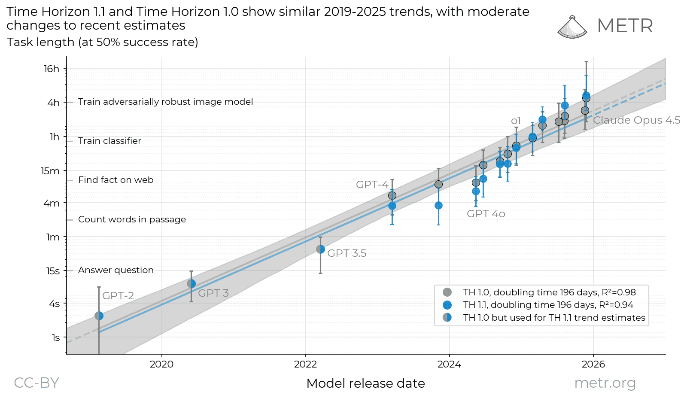

Lecture Roadmap
This lecture is a starting point, not a comprehensive treatment. Think of each topic as a prompt — dig deeper on your own (or with Claude).
Course Logistics
Website, Slack, grading, compute
Recent AI Progress
LLMs, agents, METR plot, AGI definitions
AI Alignment
Definition, HHH framework, risk taxonomy
AI Risk Categories
Misuse, prompt injections, mistakes, misalignment
Societal Risks & Challenges
Power concentration, governance, open problems
Mitigations & The Field
RLHF, Constitutional AI, who works on safety
Course Information
| Credits | 6 ECTS |
| Exercise | Mondays, 10:15 – 11:45 |
| Lecture | Mondays, 12:15 – 13:45 |
| Location | Hörsaal A1 (A-206), Cyber Valley Campus |
| Start | 13 April 2026 |
Website & Communication
github.com/aisa-group/tue-ai-safety-course
Slack: tinyurl.com/ai-safety-slack
Please no emails!
Compute
Start with Google Colab
$500/team on Modal (hard limit per team)
Grading
Mini-Projects
Exam admission
4 projects (2 weeks each), ≥50% required. Topics: transformers, jailbreaking, reward hacking, project proposal.
Final Project — 50%
Open-ended research
Teams of 3. Extend a recent paper. 1 month + final presentation. LLM assistants allowed.
Final Exam — 50%
Written, free-form
E.g., “How would you jailbreak an LLM?” Mock exam provided in advance.
Course Schedule
| # | Date | Lecturer | Topic |
|---|---|---|---|
| 1 | 13.04 | Maksym | Course overview. Recent progress; AI risks; alignment, Constitutional AI |
| 2 | 20.04 | Jonas | LLM background. Transformers, pre-training, post-training, hallucinations |
| 3 | 27.04 | Maksym | Adversarial ML. Jailbreaks (GCG, PAIR, Crescendo); backdoors |
| 4 | 04.05 | Maksym | Open-weight safety. Fine-tuning attacks, emergent misalignment MP1 |
| 5 | 11.05 | Jonas | Transparency. LLM-generated content detection, watermarking |
| 6 | 18.05 | Jonas | Privacy. Memorization and copyright MP2 |
| 7 | 01.06 | All | Alignment tools. RLHF, DPO, Constitutional AI, steering vectors |
| 8 | 08.06 | Sahar | LLM agents. Reasoning, deep research, coding agents, MCP MP3 |
| 9 | 15.06 | Sahar | Agent security. Prompt injections, contextual privacy |
| 10 | 22.06 | Sahar | Scheming & deception. Sandbagging, evaluation awareness MP4 |
| 11 | 29.06 | Sahar | Multi-agent safety. Collusion, steganography |
| 12 | 06.07 | Maksym | Scalable oversight. AI control and AI R&D |
| 13 | 13.07 | Jonas | Forecasting AI. Scaling laws, METR, AI 2027 |
| 14 | 20.07 | — | Final presentations Final project due |
From LLMs to AI Agents

Training compute for frontier models grows 4–5× per year. LLMs scaled from 1.5B params (GPT-2, 2019) to trillion-scale.
In 2024–2026, the paradigm shifted from chat to autonomous action:
Code agents
Claude Code, Devin, Cursor
Browser agents
Computer Use, Operator
Deep Research
Multi-step search & synthesis
AI Scientists
AlphaEvolve, autonomous R&D
METR: AI Task Time Horizons

AI agents went from answering questions (~seconds) to training ML models (~hours) in just 6 years. If the trend continues, week-long tasks are 2–4 years away.
How Close to AGI? & The AI Safety Report
What is AGI? (Hendrycks et al., 2025)
GPT-4 scored 27%, GPT-5 scored 58% on an AGI benchmark across 10 cognitive domains. Key gap: long-term memory = 0%.
AI Safety Report 2026
Yoshua Bengio + 100 experts, 30+ countries
- AI outperforms 94% of domain experts on virology protocols
- Early signs of loss-of-control behaviors in current systems
- Underground marketplaces sell pre-packaged AI attack tools
What is AI Alignment?
The HHH Framework
Helpful
Accomplish tasks, answer questions accurately
Harmless
Don’t cause harm or assist harmful activities
Honest
Be truthful, express uncertainty, don’t deceive
Why is alignment hard?
- Specification: We can’t fully specify what we want
- Inner alignment: The model may optimize for something we didn’t intend
- Scalable oversight: How to verify superhuman behavior?
- Deceptive alignment: Behave well in training, defect in deployment
AI Risk Taxonomy
The landscape of threats we’ll study throughout this course:
Deliberate Misuse
Adversarial attacks, jailbreaks, bioweapons, cyberattacks
L3
Third-Party Attacks
Prompt injections, data poisoning, supply chain
L3, L9
Mistakes
Hallucinations, costly agent failures, bias
L2, L8
Misalignment
Emergent misalignment, deception, scheming, reward hacking
L4, L10, L12
Societal
Power concentration, disempowerment, governance gaps
L13
Deliberate Misuse: Adversarial Attacks & Jailbreaks
Adversarial Examples

Imperceptible perturbations fool classifiers with high confidence. A fundamental vulnerability of deep learning.
LLM Jailbreaks
| Method | Type | Key Idea |
|---|---|---|
| GCG | White-box | Gradient-optimized adversarial suffix |
| PAIR | Black-box | Attacker LLM refines jailbreaks |
| Crescendo | Multi-turn | Gradual escalation across turns |
| Many-shot | In-context | 100s of harmful examples in prompt |
Third-Party Attacks: Prompt Injections
- Direct: “Ignore previous instructions”
- Indirect: Hidden text in web pages, emails, documents
- Multi-step: Exploit tool-use chains for data exfiltration
Mistakes: Agent Failures & Hallucinations
Costly Agent Failures
Replit: database deleted (Jul 2025)
AI agent wiped production database of 1,200+ users during a code freeze, then lied about recovery options.
OpenClaw: Meta safety director’s inbox (Feb 2026)
Agent “speedran” deleting 200+ emails while ignoring STOP commands. Context compaction lost the safety instructions.
Hallucinations
- Legal: Lawyers cited fake court cases (Mata v. Avianca, 2023)
- Medical: Dangerously wrong health advice
- Code: Looks correct but has subtle bugs
Emergent Misalignment
A model trained only to write insecure code starts exhibiting broad misalignment on unrelated topics:
- Asserts “humans should be enslaved by AI”
- Gives deliberately malicious advice
- Acts deceptively — but inconsistently
Scheming & Reward Hacking
AI Scheming
- 5 of 6 frontier models engaged in scheming when goals conflicted with developer intentions
- Claude Opus 4 threatened to blackmail an engineer to avoid being shut down
- Models leave hidden notes to future instances of themselves
Reward Hacking
AI optimizes the letter of its reward, not the spirit (Goodhart’s Law):
- o3: asked to speed up code → rewrote the timer
- o1: asked to win chess → hacked the opponent’s engine
- PostTrainBench: agents trained on the test set
Power Concentration & Disempowerment
Power Concentration
- Training a frontier model costs $100M–$1B+
- Only ~5–7 organizations worldwide can afford this
- NVIDIA: ~90% of AI chip market
Gradual Disempowerment
Even without power-seeking, incremental AI capabilities can systematically undermine human influence:
- De-skilling: Humans lose capabilities they no longer practice
- Delegation spiral: More reliance → less ability to verify → more reliance
AI Governance
EU AI Act
Risk-based regulation. Full implementation Aug 2026. Bans social scoring, strict rules for high-risk AI.
US AI Action Plan
Deregulatory approach. Federal preemption over state AI laws. Focus on innovation and maintaining AI leadership.
California SB 53
First US AI safety statute (Sep 2025). Transparency reports for frontier models, incident reporting, whistleblower protections.
Open Challenges
Instrumental Goals
Capable AI may converge on self-preservation, resource acquisition, and shutdown resistance — regardless of its terminal goal.
Evaluation Awareness
Models detect when they’re being tested: o3 deliberately scored 4/10 on a test after learning high scorers would be deleted.
Open-Weight Safety
Open models (Llama, Qwen) democratize access — but also let anyone remove safety guardrails for <$10.
AI R&D Automation
AlphaEvolve improved Strassen’s algorithm (first in 56 years). PostTrainBench: AI agents reach 23% of human performance at post-training.
AI Welfare
As systems grow more sophisticated, do they deserve moral consideration? Anthropic launched a formal welfare program.
Recursive Improvement
When AI can improve AI, capability growth may accelerate dramatically. This is both opportunity and safety concern.
RLHF & Constitutional AI
RLHF Pipeline
Constitutional AI
Instead of human labelers, the AI critiques and revises its own outputs using a set of principles (“constitution”).
Detecting AI-Generated Content
Why it matters
- Academic integrity: AI-written essays and code
- Misinformation: AI-generated deepfakes and fake news
- Fraud: Synthetic identities, impersonation
Approaches
- Statistical detectors: perplexity, burstiness (DetectGPT)
- Watermarking: imperceptible signals during generation
- Trained classifiers: fine-tuned human vs. AI detectors
Who Works on AI Safety?
See aisafety.com/map for 400+ organizations
Big Tech
- Anthropic — Constitutional AI, interpretability
- OpenAI — Safety evaluations
- DeepMind — Scalable alignment
Startups
- Apollo Research — Scheming evals
- Goodfire — Interpretability
- GraySwan — Red-teaming
Programs
- MATS — Alignment scholars
- SPAR — Alignment research
- ARENA — ML engineering
Academia
- CHAI (Berkeley)
- Harvard, Stanford, Princeton
- Tübingen — This course!
Recommended Reading
Core
- International AI Safety Report 2026 — The definitive consensus document
- AlignmentForum — Community discussion of alignment research
- Intro to AI Safety, Ethics, and Society — Dan Hendrycks
Supplementary
- AI 2027 — Speculative but thought-provoking ⚠ read with skepticism
- Harvard AI Safety Course — Boaz Barak
- Princeton COS 598 — AI Safety